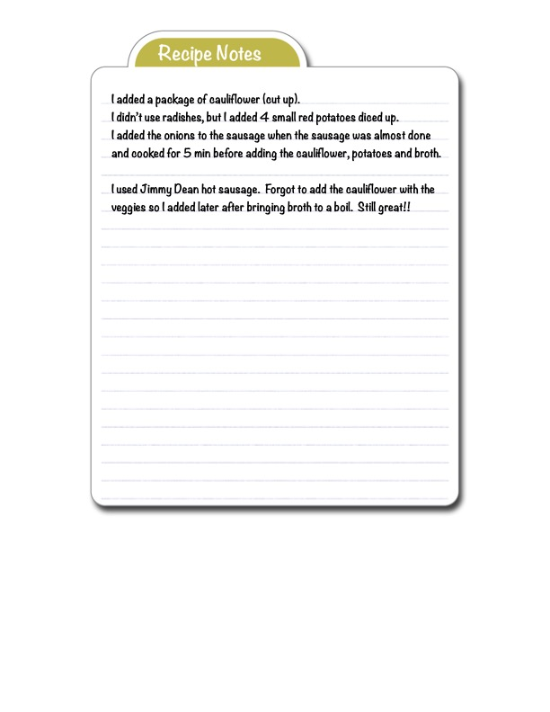

Recipe Notes

Original cookbook page 109
Handwritten notes documenting personal modifications and observations about a sausage and vegetable soup/stew recipe
Ingredients
- package of cauliflower (cut up)
- 4 small red potatoes diced up (instead of radishes)
- onions
- Jimmy Dean hot sausage
- broth
Instructions
- Cook onions with the sausage when the sausage is almost done and cook for 5 min before adding the cauliflower, potatoes and broth
- Add cauliflower with the veggies (or add later after bringing broth to a boil if forgotten)
Recipe #109 from collection